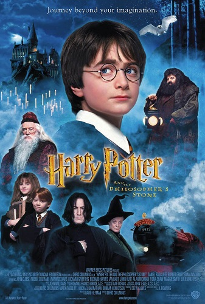

Aventura
Harry potter e a pedra filosofal
conta a história de um jovem que descobre ser um bruxo e embarca em uma incrível jornada pelo mundo da magia, onde faz grandes amizades, enfrenta desafios e começa a descobrir os mistérios sobre seu passado.